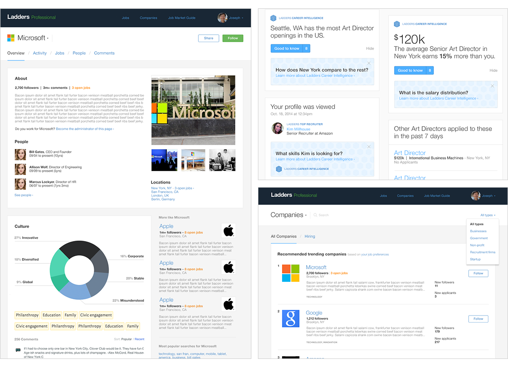
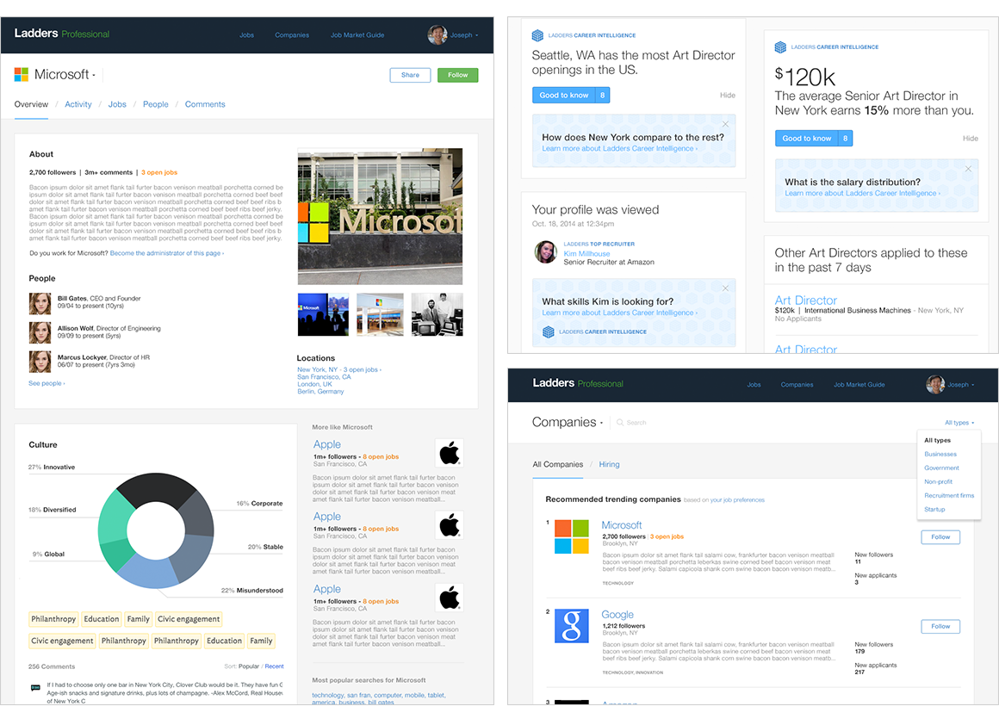

Hi, I’m Courtney
I specialize in thoughtful, strategic, clean, and empathetic design.
Scroll to check out my work below, or get to know me.
How I work
Thoughtful
I believe in doing it right the first time, so I ask a lot of questions. "What’s the problem we’re solving? Is it the right one? What do we hope to learn?"
Strategic
I believe in being accountable for the experiences I design, so I strive to be measureable. "What’s our goal? How will we know we were successful?"
Clean
I believe design is mindful of the “how,” so I live in that fuzzy area of HTML/CSS and UI/JS. “Can we release and see? Can we reduce complexity?”
Empathetic
I believe it all comes down to the user in the end, so I aim to be their voice. “How do we want users to feel? What are users’ mentality/expectations?”
My recent work
TheLadders Jobseeker Responsive Member and Guest Websites
Product Design, UI + UX Design, UX Research
Led the on-going, iterative UI design work and UX research at TheLadders that resulted in a 24% increased NPS rating.
- Responsible for the UI when transitioning 1.6 million users to a new, modernized, responsive platform, which included a redesigned search system and experience.
- Led the effort to create a living style guide that allowed teams to move faster more efficiently and ensure style consistency across touchpoints. I partnered with an engineer on each team to incrementally consolidate styles and eliminate thousands of lines of redundant, complex legacy code. The end result was a living style guide comprised of reusable, responsive components that engineers adopted and incorporated into their development process. What used to take days or weeks, now took hours.
- With the intention of elevating the overall experience of the two-sided ecosystem, I led the UI + UX design and UX research to improve the data collection flow for new registrants, which resulted in a 90% profile completion rate versus 10% in the control with an improved onboarding experience. We later directed low-data users through the flow to further improve the ecosystem experience.
- Established the UI framework for the new, SEO- and acquisition-driven “Guest” product, which has had exponential growth since its initial release in January 2015.
 

Ladders Recruiter iPhone App
Creative Direction, Product Design, UI + UX Design, UX Research
With a 4.5/5-star rating in the App Store, I led the on-going, iterative UI design work and UX research for TheLadders’ recruiting iPhone app.
Toast Android App
Creative Direction, Product Design, UI + UX Design
Curious to learn more about designing for Android, I picked up Toast as a side freelance project. Toast wanted to be for restaurants and retailers what Square is for coffee shops and farmers market vendors. I was primarily responsible for developing a scalable design and brand system – scaling across the nebulous world of Android devices, orientations, and resolutions. I also optimized the payment flow by redesigning a few key screens in the experience, which resulted in half as many screens (and more fun animations).
TheLadders Recruiter Responsive Website
Product Design, UI + UX Design, UX Research
Responsible for modernizing the visual identity of TheLadders Recruiter, the recruiting web component of TheLadders’ two-sided ecosystem. I partnered with product managers, UX designers, and frontend and backend engineers in order to redesign the product via on-going, iterative visual and interaction improvements. With a redesigned homepage, I elevated the brand and improved acquisition by increasing the number of registrants/day by 25% and doubling conversion (16% to 32%).